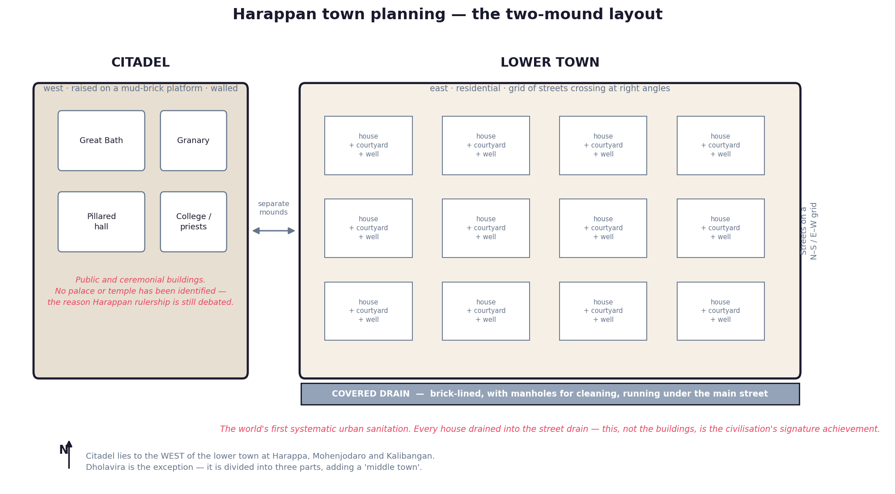

A. Discovery — From Cunningham to Marshall
Charles Masson described Harappa's brick mounds in the 1820s, taking them for a city of Alexander's age. Alexander Cunningham, first Director-General of the ASI, visited in 1853 and 1856 and published a Harappan seal in 1875, but assumed it was late and foreign because its script matched nothing known; much of the site was meanwhile carted off as railway ballast. The breakthrough came under John Marshall: Daya Ram Sahni excavated Harappa on the Ravi in 1921, and R.D. Banerji struck Harappan levels beneath the stupa at Mohenjodaro in 1922. Marshall matched the seals and announced the civilisation in the Illustrated London News of September 1924. Mortimer Wheeler (DG 1944–48) later dug the fortifications and supplied the "citadel" vocabulary that still colours interpretation.
B. Chronology — Early, Mature and Late Phases
State commissions still quote the older bracket of 2500–1750 BCE; calibrated radiocarbon puts the urban phase slightly earlier. If 2500–1750 BCE appears among the options, that is the intended answer; if phase-wise dates are offered, use the calibrated set below.
| Phase | Dates | Defining trait | Type sites |
|---|---|---|---|
| Pre-Harappan Neolithic | c. 7000–3300 BCE | Farming villages; no cities, no writing | Mehrgarh, Bhirrana |
| Early Harappan | c. 3300–2600 BCE | Regional cultures; first fortifications | Kot Diji, Amri, Sothi-Siswal |
| Mature Harappan (urban) | c. 2600–1900 BCE | Grid cities, standardised bricks and weights, seals, script, overseas trade | Mohenjodaro, Harappa, Dholavira |
| Late Harappan (de-urban) | c. 1900–1300 BCE | Cities abandoned; seals, weights and script vanish; eastward shift | Cemetery H, Jhukar, Rangpur |

C. Geographical Extent — The Four Corner Sites
At roughly 1.3 million sq km the IVC was larger than contemporary Egypt and Mesopotamia combined. The extremity sites are pure recall and are asked often.
| Direction | Site | Modern location | River |
|---|---|---|---|
| North | Manda | Jammu (India) | Chenab |
| South | Daimabad | Ahmadnagar, Maharashtra (India) | Pravara |
| East | Alamgirpur | Meerut, Uttar Pradesh (India) | Hindon |
| West | Sutkagendor | Balochistan (Pakistan) | Dasht |
Shortughai, on the Oxus in Afghanistan beside the lapis lazuli mines of Badakhshan, was a Harappan trading outpost.
D. The Major Sites — Excavator, River, Signature Feature
| Site | Country / State | River | Excavator (year) | Signature feature |
|---|---|---|---|---|
| Harappa | Punjab, Pakistan | Ravi | Daya Ram Sahni (1921) | Twelve granaries; Cemetery R-37; workmen's quarters; coffin burial |
| Mohenjodaro | Sindh, Pakistan | Indus | R.D. Banerji (1922) | Great Bath; Great Granary; assembly hall; Dancing Girl; Pashupati seal; Priest-King |
| Chanhudaro | Sindh, Pakistan | Indus | N.G. Majumdar (1931); Mackay (1935–36) | Bead and shell factories; the only major city with no citadel |
| Lothal | Gujarat, India | Bhogava (Sabarmati) | S.R. Rao (1954–55) | Dockyard; bead factory; rice husk; fire altars; Persian Gulf seal |
| Kalibangan | Rajasthan, India | Ghaggar | A. Ghosh (1951); B.B. Lal (1960s) | Pre-Harappan ploughed field; fire altars; camel bones; name means "black bangles" |
| Dholavira | Kutch, Gujarat, India | Mansar & Manhar | J.P. Joshi (1967); R.S. Bisht (1990–) | Three-part city; rock-cut reservoirs; ten-sign signboard; UNESCO 2021 |
| Rakhigarhi | Hisar, Haryana, India | Ghaggar palaeochannel | Amarendra Nath (1997) | Largest IVC site in the subcontinent (c. 350 ha); 2019 DNA study |
| Banawali | Fatehabad, Haryana, India | Saraswati palaeochannel | R.S. Bisht (1974) | Radial rather than grid streets; poor drainage; terracotta plough model |
| Surkotada | Kutch, Gujarat, India | — | J.P. Joshi (1964) | Only site with claimed horse bones (disputed); pot burials |
| Ropar | Punjab, India | Sutlej | Y.D. Sharma (1953) | First site excavated after Independence; a dog buried with a human |
🧠 The four corners — "MDAS": Manda north, Daimabad south, Alamgirpur east, Sutkagendor west.
E. Town Planning — The First Planned Urbanism

What is extraordinary is not the size of the cities but their uniformity: a brick made at Mohenjodaro fits a wall at Kalibangan 700 km away. Standardisation on that scale implies an authority, or a shared convention, of remarkable reach.
- Grid layout: streets and lanes crossing at right angles into rectangular blocks, oriented north–south and east–west.
- Citadel and lower town: a raised, usually western mound on an artificial mud-brick platform, separately walled, carrying the public buildings; and a larger, lower eastern mound of houses and workshops. Dholavira is the exception, with a three-fold division — citadel, middle town, lower town.
- Standardised burnt bricks in the ratio 4 : 2 : 1 (about 28 × 14 × 7 cm), laid in English bond. Kiln-fired brick for drains, wells and bathrooms; mud brick for platforms and, at Kalibangan, most house walls.
- Drainage: the most advanced of any Bronze Age civilisation. House drains fed street drains through soak-jars; the street drains were brick-lined, slab-covered and fitted with inspection chambers (manholes).
- Houses: built round a courtyard, with a private well and a paved bathroom against the street wall so waste could drain out. Doors opened on to side lanes; no windows faced the street.
- Streets: the widest at Mohenjodaro about 10 m across, lanes 1.5–3 m, corners rounded for carts; neighbourhood wells (an estimated 700 at Mohenjodaro) and street-side bins.
| Structure | Site | Detail that gets asked |
|---|---|---|
| Great Bath | Mohenjodaro citadel | c. 11.9 × 7 m, 2.4 m deep; steps north and south; floor sealed with bitumen; ritual purification, not recreation |
| Granaries | Mohenjodaro citadel; Harappa | Mohenjodaro's is the largest single building (c. 45.7 × 15.2 m) with air ducts below, though the "granary" label is debated — no grain was found. Harappa has twelve in two rows of six, beside working platforms and workers' quarters |
| Dockyard | Lothal, east side | Baked-brick basin c. 214 × 36 m with inlet channel and spillway; the world's earliest dockyard, read by a minority as an irrigation tank |
| Reservoirs | Dholavira | Sixteen or more rock-cut and masonry tanks, some over 70 m long |
| Fire altars | Kalibangan, Lothal, Banawali | Brick-lined pits with a central stele; debated as continuity with Vedic ritual |
F. Economy — Agriculture, Craft and Raw Materials
Wheat and barley were the staples, with peas, sesame, mustard, dates and rice at Lothal and Rangpur. The Harappans were the world's first cultivators and weavers of cotton — the Greeks called the cloth sindon, after Sindh. A ploughed field at Kalibangan carries two sets of furrows at right angles, two crops in one field; a terracotta plough model comes from Banawali. Cattle, buffalo, sheep, goat, pig, dog, elephant and camel are attested; the horse is not, apart from the disputed bones at Surkotada.
Metallurgy was firmly Bronze Age — copper, bronze, gold, silver and lead, with the lost-wax technique producing the Dancing Girl. Iron was unknown, which eliminates any option placing the IVC in the Iron Age. Raw materials came from far afield: copper from Khetri and Oman, tin from Afghanistan, gold from Kolar, carnelian from Gujarat, steatite from Rajasthan.
G. Weights, Measures and Overseas Trade
The weight system is the strongest single argument for a regulated economy. Weights were cubes of chert running in a binary progression in the lower denominations — 1, 2, 4, 8, 16, 32, 64 — then in decimal multiples of 16 (160, 320, 640, 1600, 3200), the base unit about 13.6 g. Length is attested by an ivory scale from Lothal graduated at about 1.7 mm. There was no coinage; exchange was by barter, with seals stamping bales of goods.
| Mesopotamian name | Identified with | Evidence |
|---|---|---|
| Meluhha | The Indus lands | Texts of Sargon of Akkad record ships of Meluhha berthing at his capital; a "Meluhha interpreter" is named on a seal |
| Dilmun | Bahrain and the Gulf coast | Entrepot on the sea route; circular "Persian Gulf" seals, one found at Lothal |
| Magan | Oman and the Makran coast | Copper source; halfway stop to Mesopotamia |
Harappan seals, carnelian beads and weights have been found at Ur, Kish, Lagash, Tell Asmar and Susa. Exports were beads, cotton, ivory and timber; imports silver, tin, bitumen and cylinder seals.
H. Seals and the Undeciphered Script
Over 3,500 inscribed objects survive — mostly steatite seals, plus copper tablets, pottery graffiti and one monumental text, the ten-sign Dholavira signboard. The script has roughly 400 basic signs — too many for an alphabet, too few for a purely logographic system — so most specialists call it logo-syllabic.
- Direction: normally right to left; where a text runs to a second line the direction reverses — the boustrophedon style, "as the ox ploughs". Cramping of signs at the left edge is the physical proof of right-to-left writing.
- Length: the average inscription is about five signs, the longest on a seal seventeen. That brevity, plus the absence of any bilingual text like the Rosetta Stone, is why decipherment has failed.
- Rival claims: Asko Parpola argues for a Dravidian language, S.R. Rao for an Indo-Aryan reading, and Farmer, Sproat and Witzel that it is not writing at all. None is accepted — the answer is always "not deciphered".
- Function: seals were pressed into wet clay to tag bales of goods, marking a merchant, lineage or office.
I. Religion — Inference Without a Readable Text
- The "Pashupati" seal (Mohenjodaro) shows a horned, apparently three-faced figure seated with heels together, ringed by elephant, tiger, rhinoceros and buffalo, with deer below. Marshall read it as a proto-Shiva; Doris Srinivasan and others doubt the figure is even male or divine. Treat proto-Shiva as an interpretation, not a fact.
- Mother Goddess figurines: terracotta females with elaborate headdresses and smoke-stained side cups, taken as a fertility cult; commoner at Harappa than Mohenjodaro.
- Tree and animal worship: the pipal recurs on seals, sometimes with a figure inside its branches; the humped bull and composite animals also carry apparent cult meaning.
- Stones: conical stones and perforated ring-stones have been read as linga and yoni — disputed.
- No temple has been securely identified anywhere in the IVC — no shrine, no installed cult image, no priestly complex. The absence is itself a favourite examinable point.
- The swastika appears on seals, and amulets suggest belief in magic.
J. Society and Polity — The Genuinely Debated Ground
The IVC is unique among Bronze Age civilisations in showing monumental planning without monumental rulers: no palaces, no royal tombs, no temples, no royal portraits, no scenes of war. Bronze spearheads and axes exist, but the spearheads lack the strengthening mid-rib that would make them effective in combat, and there is no sign of a standing army. The walls look more like flood defences than military works.
| Model | Proposed by | Argument |
|---|---|---|
| Priestly theocracy | Wheeler, Piggott | The citadel with Bath and granary implies a priest-king controlling ritual and grain |
| Merchant oligarchy | Standard textbooks | Standardised weights and seals imply control by a trading class |
| Competing city-states | J.M. Kenoyer | Regional variation in city plans implies separate polities sharing a culture |
| No state at all | Gregory Possehl | Uniformity came from shared ideology and trade convention |
The safe formulation: the IVC shows no clear evidence of kings or armies and looks comparatively egalitarian, while the form of authority remains unknown. Occupational stratification is still visible — unequal house sizes, workmen's quarters at Harappa, craft districts at Chanhudaro.
K. Burial Practices
Harappan graves are modest — pots and a few ornaments, never the gold-laden tombs of Ur or Egypt, which is itself part of the argument against a powerful ruling class.
| Type | Site | Description |
|---|---|---|
| Extended (supine) burial | Harappa Cemetery R-37, Kalibangan, Rakhigarhi | Body full length in a pit, usually head to the north, with pots |
| Coffin burial | Harappa | Wooden coffin in the grave — rare |
| Pot / urn burial | Surkotada, Kalibangan | Remains placed in a large urn |
| Symbolic burial (cenotaph) | Kalibangan, Dholavira | A proper grave with pots but no skeleton |
| Joint / double burial | Lothal | A male and a female together; read by some as proto-sati, an inference most archaeologists reject |
| Animal with human | Ropar | A dog buried at its owner's feet |
L. The Decline — What Is Rejected and What Is Accepted
Between about 1900 and 1700 BCE the cities were abandoned; seals, weights, standardised bricks, the script and overseas trade vanish together. The accurate description is de-urbanisation, not extinction — the population dispersed into villages, shifting east into the doab and south into Gujarat.
| Theory | Proponent | Standing today |
|---|---|---|
| Aryan invasion | Mortimer Wheeler (1947) | Rejected. Rested on Indra as Purandara, "fort-destroyer", and on 37 skeletons at Mohenjodaro read as a massacre. George Dales showed these come from different levels and periods, mostly without weapon injuries and none from the final occupation; centuries separate the cities' fall from the Rigveda |
| Ghaggar-Hakra (Saraswati) drying | Palaeo-channel studies | Widely accepted. Tectonic capture took the Sutlej west to the Indus and the Yamuna east to the Ganga, leaving the Ghaggar seasonal and stranding the settlements along it |
| Climate change | The 4.2 kiloyear event | The leading explanation. Prolonged weakening of the summer monsoon after c. 2200 BCE undercut the grain surplus that fed the cities |
| Tectonics and flooding | M.R. Sahni; Robert Raikes | Accepted locally. Uplift near Sehwan may have dammed the Indus and flooded Mohenjodaro repeatedly; silt layers support this there, but it cannot explain a region-wide collapse |
| Ecology and trade | Fairservis; Ratnagar | Contributory. Deforestation for brick kilns, overgrazing and soil salinity; and the loss of external demand as Meluhha vanishes from Mesopotamian records after c. 2000 BCE |
The 2019 ancient DNA study of a Rakhigarhi skeleton found no Steppe pastoralist ancestry. Note the wording: it bears on the invasion narrative, not on how Indo-Aryan languages spread, and it rests on one sample.
M. After the Cities — Post-Harappan Cultures
| Culture | Region | Date | Diagnostic trait |
|---|---|---|---|
| Cemetery H | Punjab, at Harappa itself | c. 1900–1300 BCE | Cremation with bones in painted urns; pottery with peacocks and stars — changed funerary belief above an abandoned Harappan level |
| Jhukar | Sindh (Chanhudaro, Amri) | c. 1900–1500 BCE | Coarser pottery; button seals without script — writing has been lost |
| Rangpur / Lustrous Red Ware | Saurashtra, Gujarat | c. 1900–1300 BCE | Rural continuity of Harappan forms with a glossy red pottery |
| Ochre Coloured Pottery | Upper Ganga–Yamuna doab | c. 2000–1500 BCE | Ill-fired ochre-smeared ware, linked to the Copper Hoard culture (anthropomorphs, harpoons, antennae swords) |
Iron-using Painted Grey Ware settlements follow in the Ganga plains from about 1200 BCE — a separate lineage, not Harappan descent. What survived was cultural, not urban: the pipal and humped bull in later iconography, the ritual bath, cotton weaving. What did not survive was the city, the script, the seal and the weight standard.